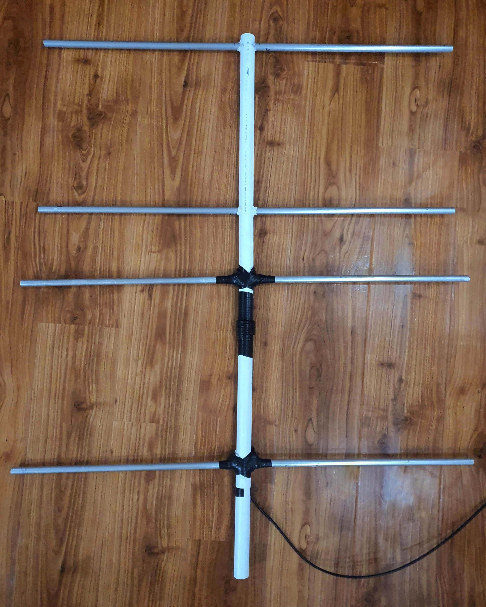
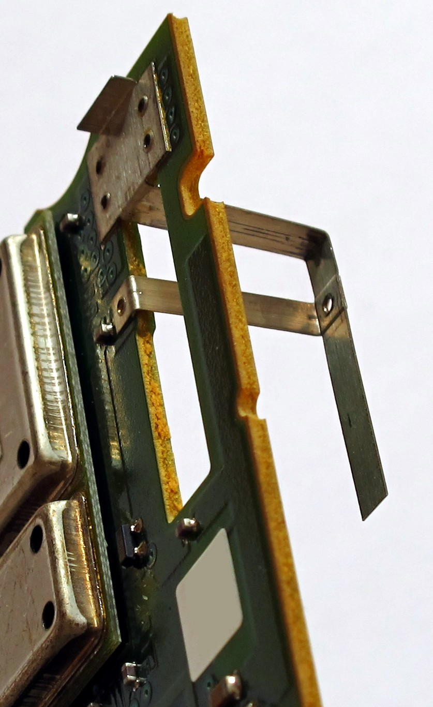
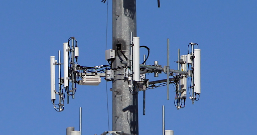
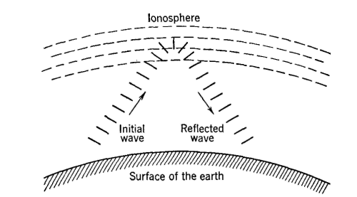

Crafting a 4 element VHF Yagi at home

image of the final build
Welcome back. this will be my first blog entry where i now will be talking about antennas and the build process of the yagi shown above. Firstly i dont really know who will be reading this so
i think it would be appropriate to give some context about how antennas work in the general
when asked the general folk how does an antenna work they will spev something about radiation but wont have a solid understanding of the topic. most wont even know that the technology they use everyday such as mobile phones still use an antenna in the first place.
i think it would be appropriate to give some context about how antennas work in the general
when asked the general folk how does an antenna work they will spev something about radiation but wont have a solid understanding of the topic. most wont even know that the technology they use everyday such as mobile phones still use an antenna in the first place.

a small 2-5g antenna often used in mobile phones
That little piece of metal is responsible of transmiting often 100mb/s of information between the phone and the cell tower that is 2 killometers away ( that is 18 books of "Harry Potter and the Sorcerer’s Stone" PER SECOND)
which to be spesific is in uncompressed form which means if you actualy wanted to download as many books of harry poter per second it would be much more.
which to be spesific is in uncompressed form which means if you actualy wanted to download as many books of harry poter per second it would be much more.

a regular cell tower
So how does it do it? The answer is "light". Yes altough the dictionary definition of the word light reffers only to the visible spectrum, i think its a great way to reffer to photons for the general public.
as the light gets red shifted along the spectrum the first common use we see is in the TV remotes. mostly all tv remotes stil use infrared LEDs to talk to the TV which you could observe with your phone camera that is more sensetive to the infrared spectrum than your eyes. but since we are talking about radio waves lets move on. as the light gets more and more red shifted which means the wavelength of the light is getting longer we arrive at microwaves which is appropriately named because it is also what your microwave operates on ( 2.45 gigahertz ) same as your phone and most devices that relies on wifi. At this point the wavelength of the light is long as 12.5cm relative to the visible spectrum we stated at which was around 500nm which is what we call green!
as the light gets red shifted along the spectrum the first common use we see is in the TV remotes. mostly all tv remotes stil use infrared LEDs to talk to the TV which you could observe with your phone camera that is more sensetive to the infrared spectrum than your eyes. but since we are talking about radio waves lets move on. as the light gets more and more red shifted which means the wavelength of the light is getting longer we arrive at microwaves which is appropriately named because it is also what your microwave operates on ( 2.45 gigahertz ) same as your phone and most devices that relies on wifi. At this point the wavelength of the light is long as 12.5cm relative to the visible spectrum we stated at which was around 500nm which is what we call green!
Before moving onto the radio spectrum lets lean on a common missconception that somehow like 90 precent of the population still belives in, that the the phones and the tecnological devices we use everyday give off "RADIATION" sppooky right. No altough the dictionary definition of the word radiation is simply the emission of energy when people reffer to it in this context they are trying to say cancer giving Ionizing radiation however this is absloutly not the case since the "radiation" a light bulb emits is much much closer to the Ionizing part of the spectrum. which also can be seen in the bottom graph. than what our phones and devices use for communucation. and a side note what are the people at WHO are concerned about when talking about SAR ratings is the minor thermal effects similar to your microwave that exists in this part. which in reallity long as you are not hugging a 5G cell tower antenna or sticking your head inside the microwave WILL NOT HAVE any meaningfull effects on you.
talking about sticking your head inside the microwave i would suggest this guys video where he kind of does that https://www.youtube.com/watch?v=Lg_aUOSLuRo
talking about sticking your head inside the microwave i would suggest this guys video where he kind of does that https://www.youtube.com/watch?v=Lg_aUOSLuRo

Ok enough talking about the microwave band and lets get into the topic
radio waves
. this part of the spectrum starts from 1Ghz down to DC and isnt so comercialy utulized as well as other bands. most activity here consist of amatour radio operators as its advantages of covering great distances with reasonable power. Most important property of this field is below the VHF band the "light" starts reflecting back from the ionosphere layer enabling us to communucate much farther distances than the line of sight. since we are now low enough in the spectrum we can also appriciate the wave properties of the "light".
But why do we still use this instead of The Internet ? All respects to the reliablity of the internet today. without getting too deep i would say most ham operators practicise this hobby for the sake of it while a certain community of "prepers" generaly obtain cheap handhelds for a possible doomsday cenario.
Anyways now since we know a little more about the "radiation" around us we can get back to the VHF Yagi i was talking about. So what is a Yagi and what is a antenna
Anyways now since we know a little more about the "radiation" around us we can get back to the VHF Yagi i was talking about. So what is a Yagi and what is a antenna